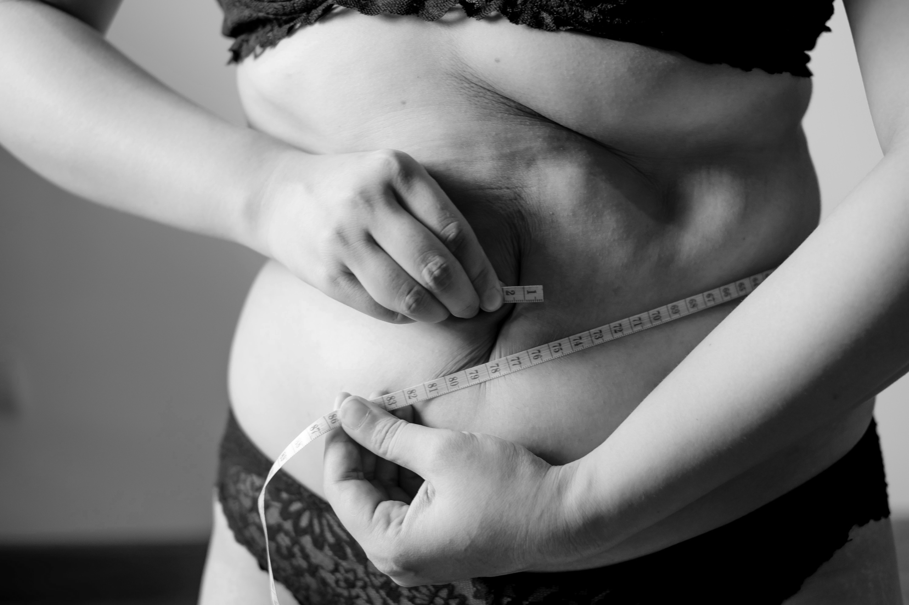
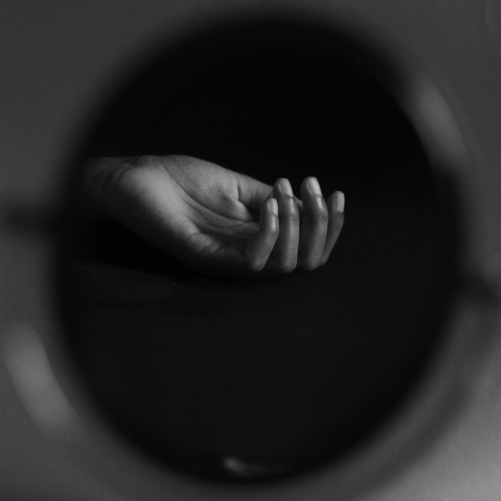
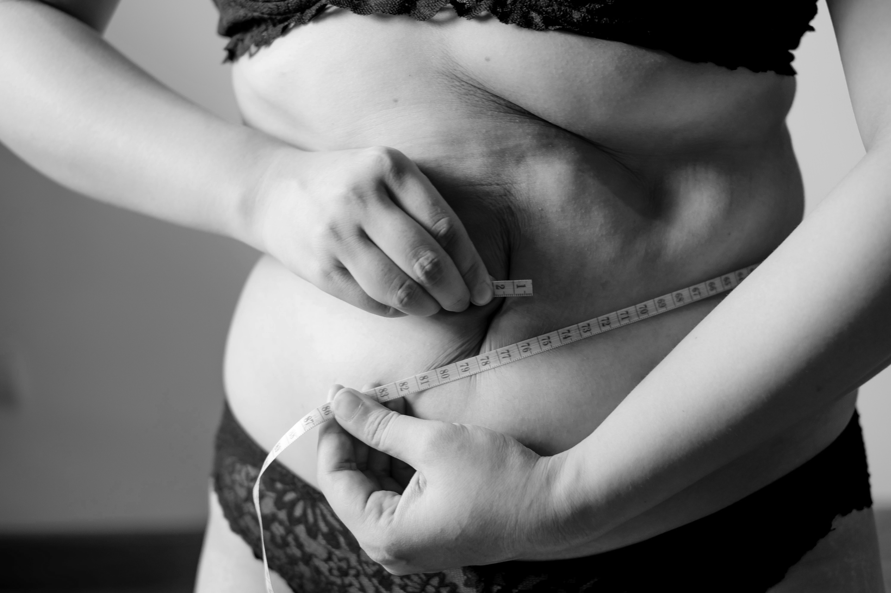
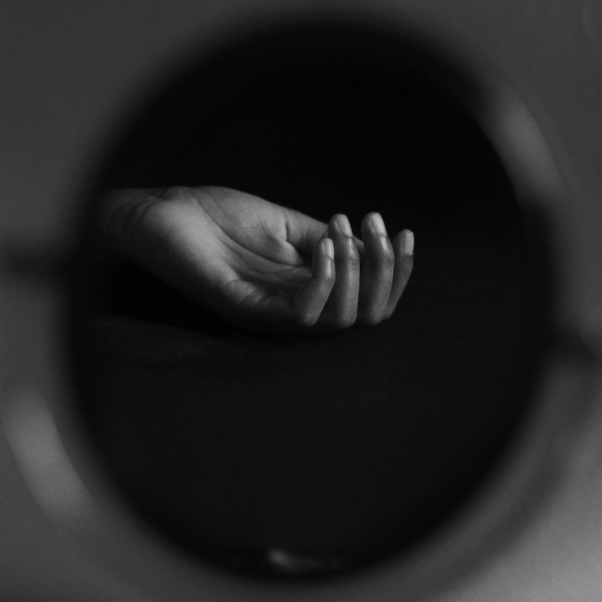
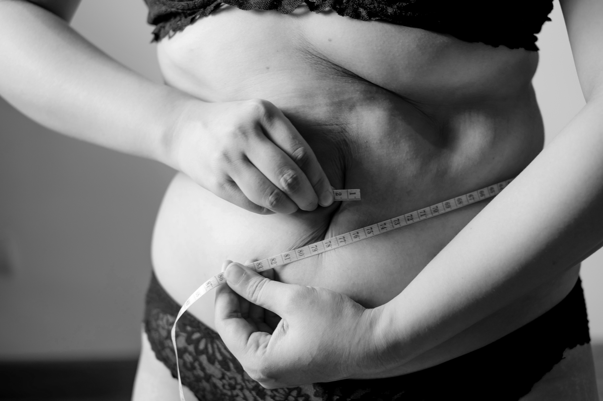
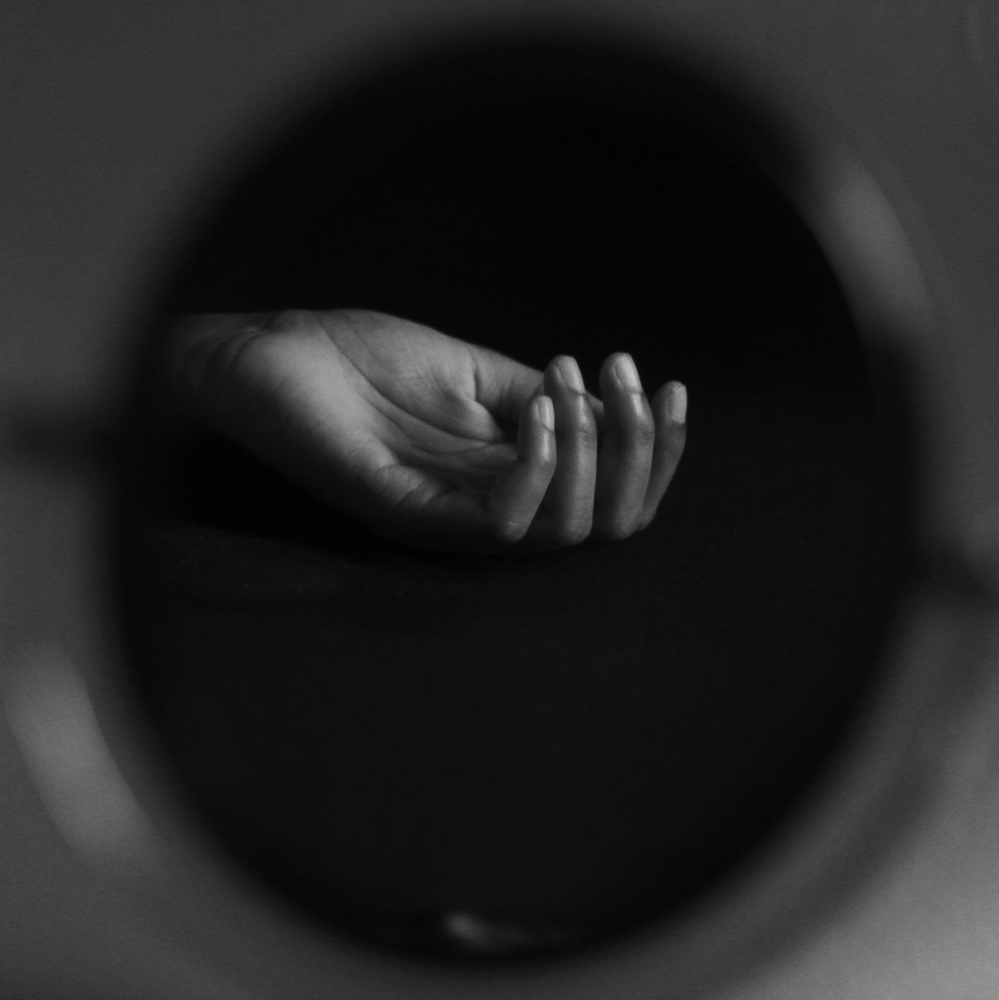
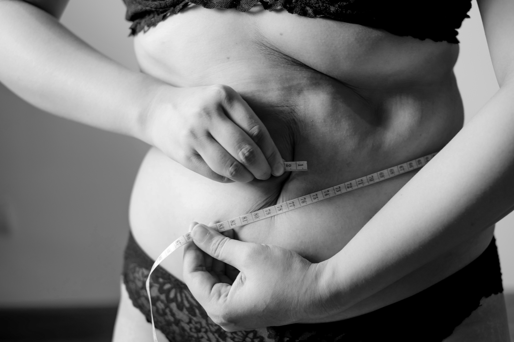
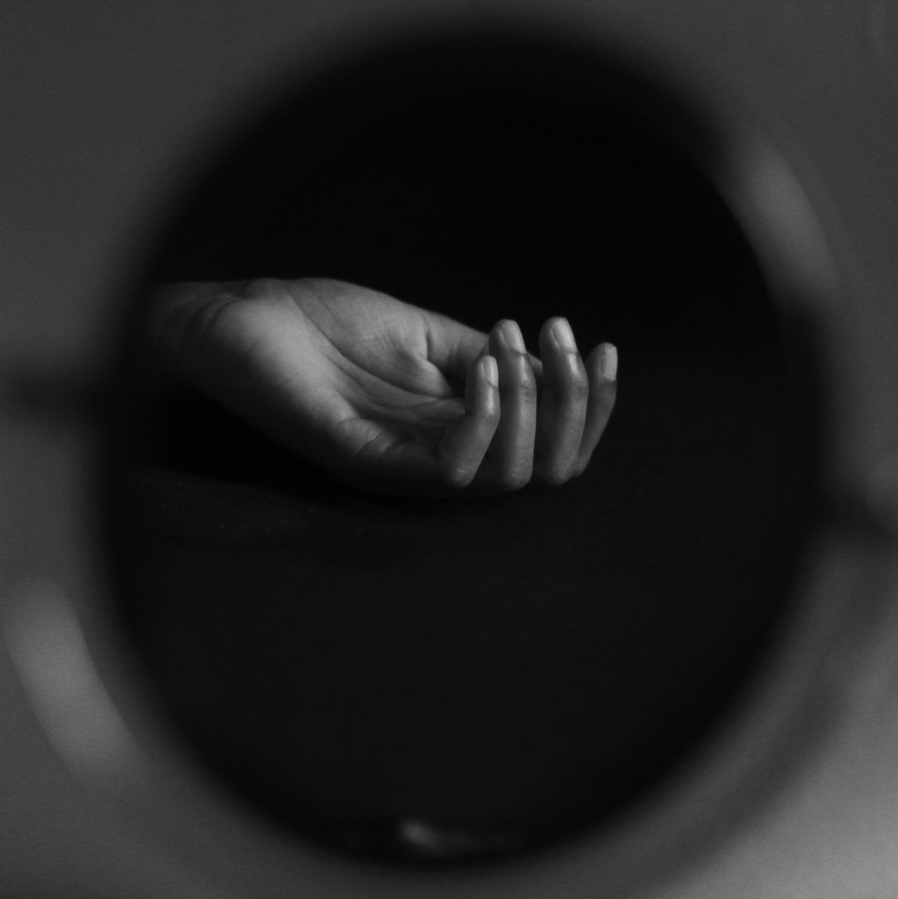

 



Drawing from personal experiences, this page provides a brief overview of the journey toward overcoming an eating disorder. Personally struggling with both anorexia and bulimia, along with a diagnosis of severe depression, I am currently undergoing sincere treatment (2years). Reflecting on my journey, I've come to realize that food, once a source of joy as a foodie, now feels burdensome—a stark reminder of the loss of motivation and zest for life. An eating disorder isn't merely about food; it acts as a mirror reflecting one's attitudes and hidden thoughts towards life itself. As you read through these personal recovery insights, take a moment to introspect.
Firstly, "Embrace it, seek diagnosis, and professional help." The cornerstone of treating eating disorders lies in seeking assistance from a professional. Delaying treatment under the guise of feeling unwell or fatigued, as I did, only exacerbated my condition, leading to a cascade of serious health complications including thyroid, lymph node problems, and autoimmune diseases.
Secondly, "Reevaluate your relationship with food." Start by delving into your inner self. Question why the act of eating has lost its joy. An eating disorder can make eating itself challenging or serve as a manifestation of deeper physical and mental struggles such as depression and purging. Despite the difficulty in sharing, you alone hold the key to understanding the underlying roots of your struggles. Remember, an eating disorder is intertwined with one's mental state.